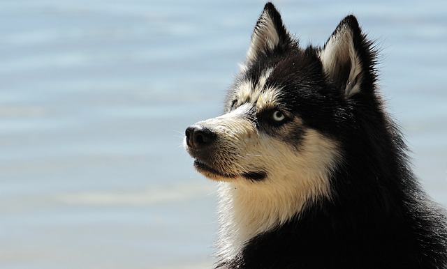

4 Patitas: Refugio de Perros
Conocé a tu próximo mejor amigo.
Nuestra historia comienza fundando esta organización sin fines de lucro en el año 1994 Nuestra misión es la de poder proteger a los más indefensos y brindarles una familia para el resto de sus vidas.
Nuestro proceso de selección de familias es muy preciso para asegurarnos que los perros no sean devueltos ni regalados nuevamente. Nuestra misión es garantizarles un hogar para toda la vida y una vida sana con compromiso de castración y seguimiento personalizado de cada uno de los casos.
Galería
Simón

Julieta

Pancho
Negrito

Peque

Pupi

Condiciones
Para adoptar un perro, es importante tener en cuenta ciertas consideraciones, como:
- El tiempo que podemos dedicar a cuidarlo. Un perro requiere atención constante y actividades diarias.
- La edad y la experiencia de los propietarios. Los perros necesitan atención y cuidado especiales durante su juventud y algunos están más dispuestos a obedecer a los adultos que a otros.
- Nuestro estilo de vida. Si no vivimos en una casa con jardín, no deberíamos adoptar a un perro grande que necesitaría mucho espacio para correr.
- El temperamento del perro. Algunas perras son más agresivas o dominantes, mientras que otras perros son más tranquilas o tímidos.
- La capacidad de comprometernos a llevar a cabo el tratamiento médico y vacunación.
- Nuestra habilidad para resolver problemas y adaptarnos a los desafíos de la vida con un perro.
- Nuestro presupuesto. Adoptar a un perro puede ser costoso, tanto en el tiempo como en dinero.
- Nuestro hogar. Deberíamos conocer las restricciones legales que existen al llevar a un animal a nuestro hogar y la disponibilidad de espacio adicional para el perro.
- Nuestra disposición a educar al animal y a entrenarlo. Es importante que antes de adoptar a un perro, tengamos claro en qué estamos interesados y cómo podemos ayudar a este a prosperar en nuestra familia.